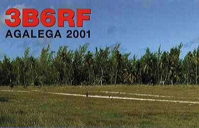

|
Flash ! DX
|
|
Flash ! DX
|
[Back Issues Oct.2001]
TIME:UTC(JST-09:00)
Report from JA1RJU (PM95sq)
31.Oct.2001(15:00g)
V73SIX 21:20- 50.014 CW Beacon
PY3DU 21:34 50.110/105 CW
KH6HME/B 21:40- 50.0615 CW Beacon
PY3OG 22:05 50.110/120 SSB
V73SIX 23:30- 50.014 CW Beacon
9G5AN 00:00 50.106 CW weak
V73SIX 00:00- 50.014 CW Beacon
KH6HME/B 00:00- 50.0615 CW Beacon
PY3DU 00:12 50.160 SSB
PY3OG 00:18 50.120 SSB
(TU2MA 00:40 50.110 CW JR6 Okinawa)
*ZL-TV 01:00- 45.25/25/26--
*9M-TV 01:00- 48.240/260 --
VK9KND 02:45 50.105 CW
V73SIX 03:00- 50.014 CW Beacon
VK4APG 05:13 50.110 CW
V73AT 05:16 50.110 CW
(JY9NX 05:12 50.110 CW JA8)
XV3AA 05:30 50.130 SSB
VK4KK 06:42 50.110 CW
N7ET/DU7 07:00 50.100 CW
DU1EV 07:18 50.124 SSB
ES1AJ 08:20 50.084 CW SC 210-240
DL3DXX 08:41 50.098 CW ↓
SM7FJE 08:45 50.092 CW
SP6GWB 08:55 50.087 CW
DK2PH 09:00 50.092 CW
VK4BRG 09:15 50.130 SSB
VK4BLK 09:23 50.104 CW
V63SC 09:35 50.120 SSB
FR1GZ 09:38 50.115 SSB
VK4CP/P 11:50 50.110 SSB
DU1EV 12:28 50.110 CW
9M6US 12:29 50.135 SSB
|
◎ 昨日同様、早朝のコンデションは南米・PY3のオープンから始まった。
この入感に続いてロングパスで9G5ANが入感、西日本を中心にQSO出来ている。
North CookのZK1NCPも相変わらずJAにアンテナを向けてQRVしてくれたが、今日のJAとのQSOは無かった。 コンデションが昨日と大きく違ったのは、昼過ぎから入感してくるUN'sが聞こえなかった事。 午後に期待されたヨーロッパ方面のショートパスもUN's同様上昇せず、 僅かにJY9NXとJA8間の初オープンがリポートされていたのが目立った程度。 10/26日から連続オープンしていたヨーロッパのシュートパスは一段落したが、 夕方にはヨーロッパの中央部が南西のスキャッターで入感していた。今日も地域差のあるオープンだった。 |
30.Oct.2001(15:00g)
V73SIX 21:15- 50.014 CW Beacon
KH6HME/B 21:30- 50.0615 CW Beacon
PY3DU 23:18 50.110/104 CW/SSB
KH6SX 01:05 50.110 CW
KH6HME 01:05- 50.0615 CW Beacon
*ZL-TV 02:00- 45.25/25/26--
VR2XMT 02:45 50.110 SSB
VK9KND 03:00 50.105 CW
UN7QX 03:10 50.100 CW
VK9KNE 03:30 50.120 SSB
ZK1NCP 03:32 50.095 CW 21 QSO's
UN1SIX/B 05:25- 50.024.8 CW Beacon
UN9P 05:30 50.104 CW
EX8MLT 05:46 50.170 SSB
UT5JAJ 06:10 50.106 CW
EX8MLE 06:30 50.092 CW
9M6US 06:43 50.130 SSB
4Z4AO 06:51 50.127 SSB
5B4FL 07:03 50.147 SSB
5B4AGM 07:06 50.105 CW
IT9RZR 07:49 50.096 CW SC 240deg
9A8A 08:16 50.101 CW
VK9KND 08:20 50.105 CW
IT9RZR 08:30 50.095 CW
V73AT 09:50 50.110 CW
PA0HIP 10:41 50.101 CW SC 240deg
ON4ANT 10:44 50.118 CW ↓
PA0LSB 10:48 50.093 CW
SM7BAE 10:54 50.105 CW
ON4AOI 11:02 50.092 CW
V73AT 11:30 50.102 CW
DU1EV 11:50 50.103 CW
|
◎ 早朝に南米(PY3)が短時間オープン。昼過ぎからUN、VK9の入感と前後して、North CookのZK1NCPが入感した。
1エリアでは太平洋岸の一部地域で短時間聞こえてだけで、コンデションは直ぐ西日本に移ってしまった。
ZK1NCPでは、JAとオープンする前に北米ともQSOしている。
ZK1NCP(OP.JI1NJC)からの報告によると、今日のJAとのQSOは21局だったと。 "火曜日の運用"を約束していたKyrgyzstanのEX8MLT(SSB)、EX8MLE(CW)の両局がQRVし、多くの局がQSOに成功。 期待されたヨーロッパのオープンは今日も続いたが、入感状況はエリアによって大きく異なった。 1エリアでは弱いショートパスと夜間のスキャッターによるオープンがあっただけで期待外れのコンデションとなった。 昨日に引き続きJA8とJR6(沖縄)地区で賑わった。 |
29.Oct.2001(15:00b)
9G5AN 00:00 50.110 CW/SSB JR6 Okinawa
SV9ANJ 06:46 50.110 SSB JA8-
9G5AN 06:55 50.106/120 SSB JA8.5.9etc.
9H1BT 07:03 50.120 SSB
LZ2CC 07:05 50.130 SSB
UT5JAJ 07:13 50.107 CW
LZ3LX 07:15 50.092 CW
YO7VS 07:15 50.127 CW
UY5HF 07:19 50.122 SSB
9H1XT 07:23 50.102 CW
LZ1CD 07:27 50.102 CW
YZ1AU 07:30 50.145 SSB
YO7VS 07:36 50.100 CW
LZ2HM 07:37 50.117 SSB
LZ2CC 07:49 50.135 CW
S54M 07:54 50.106 CW
9A3FT 07:57 50.103 CW
9A8A 07:58 50.101 CW
UX0FF 08:00 50.111 CW
I0WTD 08:02 50.098 CW
IT9IPQ 08:08 50.127 SSB
SP8UFT 08:11 50.144 SSB
IK5RLP 08:12 50.140 SSB
SP9HWN 08:14 50.137 SSB
UT3BW 08:15 50.130 SSB
UT2IO 08:20 50.100 CW
YO7VS 08:23 50.110 CW
IW1DIM 08:25 50.150 SSB
IK2GSO 08:32 50.130 SSB
9A8A 08:38 50.101 CW
OE6BMG 08:43 50.105 CW
F5QT 08:58 50.120 SSB
IZ4BBF 09:02 50.139 CW
IT9IPQ 09:05 50.127 SSB
F1JG 09:09 50.122 SSB
IK0FTA 09:18 50.153 SSB
IW1DIM 09:20 50.150 SSB
IK1MTZ 09:25 50.153 CW
I0JX 09:22 50.085 CW
IT9IPQ 09:38 50.127 SSB
OH7KM 09:43 50.118 CW
OH7PI 09:46 50.100 CW
|
◎ 連日続いていた早朝の北米方面の入感は無かったが、沖縄ではロングパスでGhanaの9G5ANが入感、QSO出来ている。 昨日はコンデションが落ち込んでいたヨーロッパ方面のショートパスが、今日は午後から復活、 1エリアでは06:20z頃から09:50z頃まで約3時間半に渡り東欧から南欧が強力にオープンした。 |
27.Oct-28.Oct.2001(00:00a) Flash! DXの「受信リポート」は休みます 28.Oct.2001(15:00b)
|
◎ 28日も早朝から北米大陸がオープンしたが、入感エリアはKL7(Alaska)から北米西海岸の一部だけで、
昨日に比べ淋しい入感だった。
この北米のオープンの最中、JR6(沖縄)では弱いZK1NCP(North Cook)の信号が短時間確認された。
その後、JA2エリアにも短時間入感、QSOしている。 10/27日の大オープンで170局、30エンティティーのQSOに成功した局まで出たヨーロッパ方面は、 昨日とは打って変わって西アジア、東欧が散発的に入感する程度で、コンデションは急激に低下してしまった。 このコンデションは深夜まで続き"グッドオープン"はひと休みとなった。 |
27-28.Oct.2001(00:00a)
|
◎ 早朝から北米大陸がJA全エリアにオープン、北米方面の入感としては今サイクル最大の賑わいとなった。
1エリアではKL7(Alaska)からカナダの太平洋岸VE7、北米は西海岸W6、7からW5、9、0などの北米中部まで入感した。 この北米がフェードアウトした後、昼前後にはUN's、UK9、午後から昨日の入感に引き続いて、 ショートパスのヨーロッパの入感で賑わった。 この日の入感は地域差があり、各エリアによっても入感状況に大きな差があった。 早朝のロングパスではほとんどQSOのチャンスの無いJA8でも、東欧からIT9RZRなどイタリア付近までの多くのQSOがリポートされている。 本土では比較的入感状況の良かったJA3、4、5、6でも東欧からヨーロッパ中西部まで幅広い入感があった。 特に、九州西部(長崎)では今日だけで100局を超えるヨーロッパとQSOした局も複数いて、中には30エンティティーとQSOした局もいた。 この時期としては予想もしない"歴史的"な大オープンとなった。 この時間帯のヨーロッパのオープンは九州止まりで、これより南部の奄美諸島や沖縄地方では、 本土とQSOしている数局の弱い信号が確認されただけで、辛うじてコンデションの終了間際に短時間QSO出来た。 夜間(12:00z頃)になって、再び石垣島など南西諸島で9H1、UT5など弱いヨーロッパの入感があったが、オープンの時間は短かった。 昨夜まで入感が続いていた夜間の中米のロングパスは、沖縄地区でも今日は確認出来なかった。 尚、このオープンの前後には北米、中南米の入感もあり"ONE DAY WAC"を完成した局もいる。 10/27のオープンで入感が確認されているエンティティーは次の通り。(一部Asia、Africaを含む)
9A. 9H. CT. DL. EH. EH6. EH9. ES. EX. F. G. GU. HB. I. IS0. LX. LY. LZ. OE. OH
|
26.Oct.2001(16:00f)
G4DMA/KL7 23:10 50.127 SSB BP41
WL7M 23:17 50.110 CW BO49
KL7CDG 23:30 50.117 CW CQ EU
WL7M 00:10 50.110 CW BO49
KL7IKV 00:13 50.105 CW
(PY0FM 00:15 50.105 CW JR6/Okinawa)
KL7NO 00:20 50.115 SSB BP54
(W1IPL/7 00:23 50.093 CW JA0 DN62=Wyoming)
G4DMA/KL7 00:27 50.127 SSB
UN7QX 02:35 50.104 CW
VK9KNE 02:42 50.105 CW
UN7QX 03:15 50.100 CW
UK9AA 03:28 50.100 CW
UN5PR 03:37 50.113 SSB
UN9P 03:40 50.105 CW
(ZK1NCP 03:42 50.095 CW JA7)
(EU open 06:30 50.000 CW/SSB S.Path -08:50z)
SP.9A.YO.S5.YU/YZ.Ｉ.LZ.DK/DL.9H.LY.SV.OE.OM.PA
VK6JQ 11:50 50.110 CW
VK4FNQ 12:00 50.140 SSB
VK4JH 12:10 50.115 SSB
E30NA 13:17 50.110 SSB JR6 Okinawa
HP3XUG 13:59 50.101 CW
YV5LIX 14:00 50.130 SSB
9M6US 14:00 50.140 SSB
VR2XMT 14:00 50.110 SSB
WP4KJJ 14:00 50.150 SSB
VR2HA 14:00 50.115 SSB
VR2KW 14:42 50.110 SSB
HP1AC 14:47 50.108 CW
VR2JX 15:04 50.110 CW
TI5BX 15:29 50.110 CW
TI5KD 15:40 50.130 CW
YB5QZ 15:40 50.110 CW
25.Oct.2001(16:00h)
*EU-TV 22:30- 48.250 --
*ZL-TV 22:30- 45.25/25/26--
V73SIX 22:30- 50.014 CW Beacon
*9M-TV 00:00- 48.240/260 --
V73SIX 00:00- 50.014 CW Beacon
*ZL-TV 00:30- 45.25/25/26--
*VK-TV 00:30- 46.172/240 --
UN7QX 02:25 50.104 CW
VK9KND 02:43 50.120 CW/SSB
UN6P 02:55 50.110/107 CW/SSB
UK9AA 03:04 50.100 CW
UN3G 03:24 50.115 CW
UN7QX 03:24 50.107 CW
UK9AA 03:40 50.100 CW UP2 (QSL QRZ.COM)
VK9NS 04:01 50.110 CW
VK9KND 04:01 50.110/120 CW
VK2HV 04:24 50.110 SSB
V73SIX 04:45- 50.014 CW Beacon
KH6HME/B 04:45- 50.061.5 CW Beacon
VK2EFT 05:15 50.107 CW
VK4KK 05:17 50.110 CW
VK4AFL 06:00 50.095 CW
(9H1AZ 06:04 50.100 CW JR6/Okinawa)
V73AT 06:25 50.110 CW
(IT9RZR 06:50 50.100/120 CW JA3.JR6/Okinawa)
KH6SX 07:00 50.110 CW
YB5QZ 08:28 50.110 CW
9V1GA 09:13 50.110 CW
OZ7?? 09:23 50.105 CW
PA5TA 09:24 50.090 CW
DJ4AX 09:31 50.090 CW
DK2PH 09:34 50.096 CW
G4ASR 09:36 50.102 CW
SM7AED 09:47 50.128 CW
VR2LC 11:13 50.100/103 CW/SSB
V63HJ 11:20 50.120 CW/SSB
VR2XMT 11:37 50.115 SSB
VR2YEL 11:40 50.130 SSB
VR2BG 11:58 50.110/098 CW
VR2XMC 12:00 50.115 SSB
BG7OH 12:18 50.130 SSB
VR2YNX 12:19 50.130 SSB
VR2ZXP 12:19 50.130 SSB
VR2KW 12:33 50.110/115 SSB/CW
VK4APE 12:35 50.110 SSB
VK6JQ 13:01 50.110 CW
BG7ICN 13:28 50.120 SSB
YV5LIX/B 13:55- 50.075.7 CW Beacon
YV5LIX 14:01 50.121 SSB
N7ET/DU7 14:12 50.102 CW
(TI5KD 14:14 50.110 SSB JA6.JR6/Okinawa)
VR2DXA 14:14 50.110 SSB
DU1EV 14:30 50.136 SSB
(TI4DJ 14:41 50.120 SSB JA6.JR6/Okinawa)
(HP1AC 14:47 50.103 CW JA4-)
V85RH 14:50 50.170 CW
TI4DJ 16:00 50.110 SSB
|
◎ 昼前からUN's(Kazakhstan)とUK9AA(Uzbekistan)がオープン。昨日に続いて入感したUK9AAは、約1時間近く聞こえていた。 夕方から入感してきたヨーロッパは約240度方向からのスキャッター。 JA7、0エリアなど北日本を中心に40分ほど入感していたこのオープンは、1エリアでは信号も弱く、TVのBuzzのQRMで聞き取り難い信号だった。 夜間のロングパスは昨日も入感したYV5LIX(Venezuela)がSSBで短時間聞こえただけ。 |
24.Oct.2001(16:00h)
*ZL-TV 22:30- 45.25/25/26-- weak
*VK-TV 22:30- 46.172/240 --
V73SIX 22:35- 50.014 CW Beacon
KH7R 22:59 50.110 CW/SSB
KH6HME/B 23:00- 50.061.5 CW Beacon
V63CP 23:14 50.150 SSB QSY to SSTV(QSL via JH1BLP)
*9M-TV 23:30- 48.240/260 --
KH6SX 23:33 50.110/103 CW
V63HJ 23:35 50.310 SSTV/SSB
(PY0FM 23:56 50.105 SSB JR6/Okinawa)
V73SIX 00:00- 50.014 CW Beacon
KH6HME/B 00:00- 50.061.5 CW Beacon
KH6SX 00:00 50.103 CW
V63HJ 00:00 50.310 SSTV/SSB
PY2XB 00:30 50.100 CW
(EH8BPX 00:33 50.117 SSB JR6/Okinawa)
ZL1VHF 01:00- 50.043 CW Beacon
PY0FM 01:10 50.105 SSB/CW
UN7QX 02:40 50.104 CW
UN1SIX/B 02:40 50.024.5 CW Beacon
UK9AA 03:10 50.100 CW
V73AT 04:36 50.110 CW/SSB
VK8RAS 06:00- 50.047 CW Beacon
VK6RSX 06:00- 50.304 CW Beacon
IT9RZR 11:40 50.100 CW LP?
V63HJ 12:00 50.120 SSB
VK6JQ 12:02 50.115 CW
VR2ZXP 12:03 50.110 SSB
VK4CP/P 12:04 50.110 CW
VK6JQ 12:20 50.110 CW
VR2KW 12:07 50.110 CW
V73AT 12:10 50.110 CW
VR2XMT 12:11 50.110 SSB
VK8RAS 12:25- 50.047 CW Beacon
VK6RSX 12:25- 50.304 CW Beacon
VK4BRG 12:25- 50.077 CW Beacon
VK4ABP 12:25- 52.247 CW Beacon
XW0X 12:40 50.125/116 CW/SSB
VK4WDM 12:43 50.110 SSB
VR2LC 12:47 50.110 CW
VR2XVD 12:58 50.110 SSB
VK4FNQ 13:05 50.116 SSB
VR2XMC 13:21 50.116 SSB
VR2YYW 13:22 50.116 SSB
VR2ZXP 13:22 50.116 SSB
VR2IL 13:34 50.110/140 SSB
YV5LIX 13:45 50.121 SSB
HP1AC 14:20 50.105 CW
TI5BX 15:11 50.110 SSB
|
◎ 午前中に弱い南米がオープン。Fernando de NoronhaのPY0FMが沖縄、西日本を中心に入感していたが、1エリアでは微弱。
昼近くにUN7QX(Kazakhstan)が強力に入感、JAのパイルを捌いていた。続いてUK9AA(Uzbekistan)が聞こえてきたが、信号は弱くこちらは短時間の入感だった。 夜間に再びロングパスによる中南米がオープンした。1エリアで入感が確認されたのは、VenezuelaのYV5LIXとPanamaのHP1AC。 YV5LIXのSSBは良くきこえていたが、相変わらずの"呼びっぱなし"のパイルアップではQSOもはかどらない。 最後は各エリア1、2局のエリア指定のQSOでQRTしてしまった。 |
23.Oct.2001(15:00h)
*ZL-TV 22:00- 45.25/25/26--
*HS-TV? 22:00- 48.250 --
*9M-TV 22:30- 48.240/260 --
V73SIX 22:30- 50.014 CW Beacon
DU1EV 22:39 50.110 SSB/CW
*ZL-TV 00:00- 45.25/25/26--
V63HJ 00:05 50.120 SSB QSL via JE1LES
V73SIX 01:55- 50.014 CW Beacon
KH7R 01:59 50.110 SSB
FK8HA 02:00 50.110/120 SSB
ZL1VHF 02:15- 50.043 CW Beacon
*ZL-TV 02:15- 50.760 FM TV audio
VK4PU 02:25 50.120 SSB
ZL4AAA 02:30 50.110 SSB loud! worked HL1LTC
*ZL-TV 02:40- 50.740 FM TV audio
VK8RAS 02:45- 50.047 CW Beacon
VK4BRG 02:45- 50.077 CW Beacon
VK4FNQ 03:18 50.095 CW calling ZK1/N
VK4JH 03:20 50.110 CW
HL5XF 03:20 50.110 CW
ZK1NCP/b 03:21 50.095 CW very weak into JA1
ZK1NCP 03:22 50.095 CW SC JA1 one QSO
VK4CXQ 03:42 50.110 CW
*VK-TV 05:40- 46.172 --
V73SIX 05:40- 50.014 CW Beacon
XW0X 06:20 50.110 SSB
XW0X 07:00 50.110 SSB/CW
K6MIO/KH6 07:01 50.110 SSB SC
DU1EV 07:14 50.110 SSB
(J28FF 07:49 50.110 CW JR6/Okinawa)
VK9KND 07:50 50.105 CW Norfolk Is(QSL via SP9EVP)
VK4CH 08:47 50.110 CW
XW0X 08:47 50.110 CW
VK8RAS 09:00- 50.047 CW Beacon
VK6RSX 09:00- 50.304 CW Beacon
VK6JQ 09:13 50.110 CW
VK6RSX 13:50- 50.304 CW Beacon
VK4CXQ 12:55 50.110 CW
VK4ABW 13:03 50.110 SSB
(Z22JE 13:10 50.115 SSB JA2-6)
VR2LC 13:16 50.110 SSB
A45XR 13:30 50.115/123 CW
V63HJ 13:35 50.120 SSB
VR2KW 13:37 50.100 CW
DU1EV 14:59 50.110 CW
|
◎ North CookのPenrhyn島からQRVしているZK1NCPが、03:20z頃から東関東の一部に入感した。
信号は弱く短時間の入感だったため、QSOに成功したのは僅かに1局だけだった。
North Cookがオープンする前にZL、VKが強力に入感しており、南太平洋方面のコンデションの上昇が感じられたが、
ZK1NCP・飯塚さんのリポートによると、JAの信号はダイレクトからではなくZL方向からのスキャッターだったとのこと。 一昨日(21日)FBに入感していたUN7QXからの情報によると、この日のオープンでQSO出来たJAは85局。 IC-756PROにAntennaはGP(GH62)でのQSOだったと。(TNX UN7QX & JI1CQA) |
22.Oct.2001(15:00e)
V73SIX 23:18- 50.014 CW Beacon
*VK-TV 07:45- 46.172 --
VK6RSX 11:50- 50.304 CW Beacon
XW0X 12:32 50.110 CW/SSB
(E30NA 13:40 50.110 SSB JR6 QSO)
21.Oct.2001(15:00f)
*ZL-TV 22:00- 45.25/25/26--
*VK-TV 22:00- 46.172/240 --
CE-MUSIC 22:00- 47.900 --
V73SIX 22:00- 50.014 CW Beacon
*ZL-TV 00:00- 45.25/25/26--
*VK-TV 00:00- 46.172/240 --
*9M-TV 00:00- 48.240/260 --
HL1KTX 00:47 50.100 CW
YB5QZ 01:30 50.105 CW
XW0X 02:16 50.110/130 CW
UN7QX 03:15 50.100 CW loud!
UN1SIX/B 03:15- 50.024.8 CW Beacon
UN6P 03:44 50.110 SSB
V73SIX 05:50- 50.014 CW Beacon
VK6RPH 06:30- 50.066 CW Beacon
VK6JJ 06:34 50.110 CW
XW0X 06:36 50.110/130 CW/SSB
VK5AYD 06:37 50.110/130 CW "CQ 53.100FM!"(no open)
VK4KK 06:56 50.110/100 SSB/CW
VK8RAS 06:56- 50.047 CW Beacon
XW0X 08:15 50.110 CW
YB5QZ 08:15 50.110 CW
9M2/JI1ETU 08:25 50.085 CW Beacon
VK4PU 08:28 50.110 SSB
XW0X 09:55 50.120 SSB
N7ET/DU7 12:25 50.102 CW
|
◎ JR2KDN、JI1NJC両局によるNorth CookのPenrhyn島からZK1NCPの運用が始まった。 到着直後、6mのRIGに若干のトラブルが生じたが、現在は順調に50.095MHzでBeaconを発射している。 尚、JAグループのZK1NCPとは別に、米国、カナダなどの国際メンバーによるPediも10/25から予定されている。 このグループはNorth CookのManihiki島(GL:AH99)から11/1まで運用。 |
20.Oct.2001(15:00g)
CE-MUSIC 21:53- 47.900 --
V73SIX 21:55- 50.014 CW Beacon
V73AT 22:02- 50.110 CW
N5WS 23:07 50.103 CW worked JA2
(W5OZI 23:21 50.115 CW JA7)
*ZL-TV 00:00- 45.25/25/26--
*VK-TV 00:00- 46.172/240 --
*9M-TV 00:00- 48.240/260 --
VK4KK 02:18 50.110 SSB
VK2BA 02:28 50.130 SSB
VK4RGG 02:30- 50.057 CW Beacon
VK4BRG 02:30- 50.077 CW Beacon
VK4KK 02:33 50.110 CW
VK2TQP 02:42 50.120 SSB
VK2JDS 02:57 50.130 SSB
V73SIX 03:00- 50.014 CW Beacon
UN1SIX/B 04:00- 50.024 CW Beacon
UN1SIX/B 04:30- 50.024 CW Beacon
XW0X 06:43 50.110/130 CW
YB5QZ 07:10 50.110/115 CW
VK6JJ 07:57 50.110 CW
XW0X 08:30- 50.122 CW/SSB worked EU's
V73SIX 09:50- 50.014 CW Beacon
VK6RSX 09:50- 50.304 CW Beacon
VK8RAS 11:45- 50.047 CW Beacon
DU1/GM4COK 12:15 50.110 CW
VK5AYD 12:37 50.110 CW
N7ET/DU7 14:10 50.101 CW
|
◎ 昨日からコンデションは大きく変わってしまった。昨日の朝にKL7(Alaska)が強力に入感していたが、
北米方面が聞こえる様になるとEU/AF方面のロングパスの伝搬は南米と共に"終焉"を迎える。
◎ JR2KDN、JI1NJC両局によるNorth Cookからの運用は、いよいよ明日から始まる。 |
19.Oct.2001(15:00f)
*EU-TV 22:00- 48.2502 --
CE-MUSIC 22:30- 47.900 --
KL7CDG 22:46 50.110 SSB
KL7IKV 22:49 50.104/101 CW
KL7IKV 01:27 50.110 SSB
*VK-TV 03:00- 46.172/240 --
*9M-TV 03:00- 48.240/260 --
V73SIX 03:00- 50.014 CW Beacon
VK4KK 04:01 50.110 SSB
VK4YMK 04:01 50.130 SSB
VK8RAS 04:50- 50.047 CW Beacon
V73AT 06:47 50.110 SSB
V73SIX 06:50- 50.014 CW Beacon
VK8RAS 10:00- 50.047 CW Beacon
VK4ABP 10:00- 52.347 CW Beacon
VK6JQ 10:55 50.110 CW
VK4WDM 10:57 50.110 SSB
VK4CH 11:10 50.110 SSB
VK4FNQ 11:13 50.110/130 SSB
VK6RSX 11:55- 50.304 CW Beacon
N7ET/DU7 12:00 50.110 CW
N7ET/DU7 13:25 50.110 CW
VK8MS 13:38 50.105 CW
18.Oct.2001(16:00f)
Report from JA1RJU (PM95sq)
*EU-TV 23:00- 48.2502 -- weak
*VK-TV 02:00- 46.172/240 --
FK8HA 03:45 50.110/130 SSB
V73SIX 03:45- 50.014 CW Beacon
VK4PU 04:10 50.110/115 SSB
VK4KK 04:10 50.110 SSB
VK3YY/M 04:25 50.110/130 SSB QTH VK2(Horee)
VK4KR 04:26 50.130 SSB
VK4YMK 04:32 50.130 SSB
V73AT 04:33 50.130/110 SSB/CW
KH6SX 04:40 50.110/102 CW
KH6HME/B 04:41- 50.061.5 CW Beacon
V73SIX 06:30- 50.014 CW Beacon
VK6RPH 07:30- 50.066 CW Beacon
VK6RSX 08:15- 50.304 CW Beacon
Report from JA1RJU/1 (QM06ec)
V73AT 10:30 50.110 CW
VK6JQ 11:40 50.110 CW
VK4FNQ 11:40 50.130 SSB
VK4BRG 11:40- 50.077 CW Beacon
VK8RAS 11:40- 50.047 CW Beacon
VK6RSX 11:40- 50.304 CW Beacon
VK4APE 11:50 50.110 SSB
BV6JD 12:07 50.115 SSB
YV5LIX/B 12:16- 50.0757 CW Beacon
VR2XMT 12:21 50.115 SSB
YV4AB 12:53 50.113 CW/SSB
DU9/N0TM 13:10 50.105 CW
YV5LIX 13:15 50.122 SSB
P43JB 13:30 50.100 CW QSX +-5KHz
YV4YC 14:05 50.117 SSB
HP2CWB 14:40 50.160 CW
HP1AC 14:51 50.107 CW
17.Oct.2001(16:00g)
*EU-TV 22:00- 48.2502 --
IT9RZR 22:25 50.092 CW
IT9RZR 23:15 50.102 CW CQ JA
*9M-TV 23:30- 48.240/260 --
*VK-TV 00:30- 46.172/240 --
*ZL-TV 00:30- 45.25/25/26--
VK4AKM 03:20 50.110 CW
V73SIX 03:30- 50.014 CW Beacon
V73UX 03:47 50.110 SSB
V73UX 04:52 50.110 SSB
VK4AKM 05:05 50.110 CW
K6MIO/KH6 06:03 50.110 SSB
KH6HME/B 06:08- 50.061.5 CW Beacon
V73AT 06:54 50.110 SSB
V73SIX 07:00- 50.014 CW Beacon
VK4KK 08:57 50.110/120 SSB
VK4JSR 11:57 50.110 SSB
DU1EV 12:10 50.110 CW
VK4CP 12:31 50.110 CW
VK8RAS 13:15- 50.047 CW Beacon
VK4BRG 13:15- 50.077 CW Beacon
VK6RSX 13:15- 50.304 CW Beacon
VK4ABP 13:15- 52.347 CW Beacon
YV4AB/B 14:00- 50.0257 CW Beacon
TI5BX 14:04 50.110/140 SSB
ZF1DC 14:07 50.110/115 SSB
TI4DJ 14:15 50.120 SSB
P43JB 14:20 50.104 CW
K4SN 14:34 50.107 CW
TI2RPT 14:31 50.150 SSB
JA6WFM/HR3 14:50 50.097 CW QSX155
TG9AJR? 14:55 50.120 SSB
ZF1DR? 14:58 50.118 SSB
JA6WFM/HR3 15:20 50.097 CW QSX155
| ◎ 10月7日の大オープンに続いて、今夜もロングパスによるカリブ、中米南、北米本土の入感で賑わった。 初入感だったケイマン(Cayman Is)のZF1DCは強力でJAの大パイルとなっていた。 彼はこの日のオープンで31局のJA'sとQSOしたと。他にグアテマラ(Guatemala)のTG9AJRのQSOもリポートされている。 7日のオープンが初のJAとのQSOだったホンジュラス(Honduras)のJA6WFM/HR3・中村さんも再び入感、 50.097/50.155のスプリットでJAを捌いていた。 |
16.Oct.2001(15:00f)
IT9RZR 22:50 50.115 SSB/CW
IT9RZR 22:55 50.092 CW
SV1DH 23:06 50.103 CW
9H1XT 23:15 50.115 CW
9H1BT 23:27 50.110 CW
V73SIX 23:40- 50.014 CW Beacon
IT9RZR 23:46 50.106/092 CW
IT9RZR 00:00 50.092 CW CQ JA
IT9RZR 00:30 50.092 CW F.out
*VK-TV 04:00- 46.172 --
*9M-TV 04:00- 48.240 --
V73SIX 05:40- 50.014 CW Beacon
VK6RSX 07:50- 50.304 CW Beacon
VK6RSX 14:00- 50.304 CW Beacon
BG9BA 14:02 50.110 CW
N7ET/DU7 14:08 50.110 CW
| ◎ 昨日、今日と早朝のロングパスのヨーロッパがオープンしているが信号は弱く、入感エリアも狭い。 "受信能力以下"の信号を呼んで、後でクラスターでQSOを確認すると言った"可笑しなQSO"が流行?。 QSOはオンエアで!。 |
15.Oct.2001(15:00g)
*VK-TV 22:00- 46.172/240 --
(IT9RZR 23:09 50.108 CW JA9.0)
9H1XT 23:27 50.110 CW
9H1PA 23:29 50.100 CW
V73SIX 02:50- 50.014 CW Beacon
V73UX 03:18 50.110 SSB
V73GOD 03:45 50.110 SSB
*VK-TV 08:00- 46.172 --
*9M-TV 08:00- 48.240/260 --
VK8RAS 08:55- 50.047 CW Beacon
VK4BRG 08:55- 50.077 CW Beacon
VK4ABP 08:55- 52.347 CW Beacon
VK4APG 09:00 50.110 SSB
VK4FNQ 09:01 50.110 SSB QSO with 9H1JN etc.
VK4KK 09:11 50.110 CW
VK4APE 09:21 50.110/160 SSB
VK8RAS 11:50- 50.047 CW Beacon
VK6RSX 11:50- 50.304 CW Beacon
VK4ABP 11:50- 52.347 CW Beacon
VK4CXQ 12:20 50.110 CW
VK6JQ 12:20 50.110 CW
YF1OO 12:54 50.110 CW
VK4CP 13:35 50.110 CW
KH0/JJ1QKM 14:05 50.130 SSB
V73SIX 14:10- 50.014 CW Beacon
VR2XMT 15:00 50.110 SSB
14.Oct.2001(15:00g)
*??-TV 21:45- 48.250 --
CX1CCC/B 21:53- 50.020 CW Beacon loud!
CX1CCC 22:01 50.115/150 SSB
EH7KW 22:30 50.105 CW
IT9RZR 22:50 50.165 SSB loud!
IW9DCN 23:17 50.165 SSB
PY3OG 23:40 50.115 SSB GF38
SV1DH 23:47 50.101 CW
EH5NO 23:50 50.104 CW
IT9RZR 23:53 50.092 CW
(EH9IB 23:56 50.180 CW/SSB JA2-)
*VK-TV 00:00- 46.172/240 --
IT9RZR 00:40 50.092 CW
ZL3TY 00:50 50.105 CW
ZL3NW 00:57 50.100 CW
*9M-TV 02:00- 48.240/260 --
VK8RAS 03:30- 50.047 CW Beacon
VK4BRG 03:30- 50.077 CW Beacon
VK4WDM 03:54 50.110 SSB
VK4KK 04:06 50.110 CW
VK4JH 04:14 50.110 CW
VK6RSX 05:30- 50.304 CW Beacon
V73SIX 05:30- 50.014 CW Beacon
VR2XMT 05:51 50.110 SSB
V73UX 05:51 50.110 SSB
XW0X 06:41 50.110/130 CW
9M6JQT 06:43 50.120 CW
9M6VET 07:35 50.120 SSB
N7ET/DU7 08:25 50.110 CW
DU1/GM4COK 08:35 50.110 CW
VK7RAE 08:50- 50.056.5 CW Beacon
VK2FHN 08:50 50.105 CW
VK6JQ 11:50 50.110 CW
VK8RAS 12:00- 50.047 CW Beacon
VK4BRG 12:00- 50.077 CW Beacon
VK6RSX 12:00- 50.304 CW Beacon
VK4ABP 12:00- 52.347 CW Beacon
VK4RIK 12:00- 52.445 CW Beacon
XW0X 12:18 50.110/125 CW
|
◎ 昨日に続いて早朝から南米とロングパスのヨーロッパがオープン。 21:50z前後に入感したCX1CCC/Bのビーコンは強力だったが、 コンデションが続いたのはほんの数分で、CX1CCC本人が50.115MHzのSSBでQRVしてきた時には、 コンデションは2エリアに移ってしまった。ロングパスの信号としては久しぶりに強力に入感したイタリアのIT9RZRは、 スプリットでJA'sのSSB/CWのパイルを捌いていた。 |
13.Oct.2001(15:00f)
KH6HME/B 21:20- 50.061.5 CW Beacon
KH6SX 21:20 50.110/103 CW
KV6J/KH6 21:20 50.115 SSB
PY3OG 22:20 50.115 SSB GF38
HC8GR/B 22:20- 50.035 CW Beacon loud!
LU2FFD 22:43 50.130 SSB
*CE-MUSIC 22:50- 47.900 FM
*EU-TV 22:50- 48.250 --
V73SIX 23:00- 50.014 CW Beacon
*9M-TV 01:00- 48.240/260 --
N7ET/DU7 01:32 50.101 CW
V73SIX 02:30- 50.014 CW Beacon
V73AT 04:00 50.110 CW
VR2XMT 05:09 50.110 SSB
KH6SX 05:10 50.110 CW SC 130
KH6HME/B 05:11- 50.061.5 CW Beacon
KH6SX 06:00 50.110 CW
VK4JH 06:27 50.110 CW
VK6JQ 07:15 50.110 CW
VK6RSX 07:15- 50.304 CW Beacon
V73SIX 07:15- 50.014 CW Beacon
N7ET/DU7 07:35 50.110 CW
VK4FNQ 09:02 50.110 SSB
VK6JQ 09:39 50.110 CW
9M6VET 12:00 50.125 SSB
HL1LTC 12:25 50.110 CW
DU1/GM4COK 13:35 50.110 CW
12.Oct.2001(15:00f)
*VK-TV 00:40- 46.172/240 --
VK3JOO 01:09 50.110 SSB
VK4KR 01:11 50.110 SSB
VK3PA 01:11 50.110/100 SSB/CW
VK8RAS 01:12- 50.047 CW Beacon
VK6RSX 01:12- 50.304 CW Beacon
VK2YO 01:15 50.120 SSB
VK3XQ 01:15 50.120 SSB
VK3DUT 01:17 50.110/120 SSB
VK6JJ 01:17 50.120 SSB
VK2YOY 01:26 50.120 SSB
VK2BHO 01:28 50.120 SSB
VK3XQ 01:29 50.136 SSB
VK3JOO 01:31 50.130 SSB
*9M-TV 04:00- 48.240/260 --
V73UX 05:15 50.110/130 SSB
V73SIX 05:15- 50.014 CW Beacon
VR2XMT 05:46 50.110 SSB
KH6HME/B 06:00- 50.061.5 CW Beacon
K6MIO/KH6 06:18 50.110 SSB
9M6JQT 06:20 50.120 CW
UN6P 07:46 50.110 CW
VK8RAS 11:50- 50.047 CW Beacon
VK4BRG 11:50- 50.077 CW Beacon
VK6RAS 11:50- 50.304 CW Beacon
VK4RIK 11:50- 52.445 CW Beacon
VK4ABP 11:50- 52.347 CW Beacon
VK6JQ 12:04 50.110 CW
VK4FNQ 12:12 50.110 SSB
9M6JQT 12:55 50.120 CW/SSB
N7ET/DU7 13:08 50.100/107 CW
HL1KTX 13:20 50.107 CW
11.Oct.2001(15:00d)
Report from JA6FRI (PL47ea)
*EU-TV 21:30- 48.250 --
SV1DH 23:12 50.100 CW LP
9H1AZ 23:25 50.100 CW LP
9H1XT 23:30 50.107 CW LP
PY5CC 23:49 50.110 SSB
9H1AW 23:52 50.110 CW LP
9H1BT 23:55 50.110 CW LP
PY2BW 23:59 50.110 CW
PY2PAI 00:04 50.105 CW
PY2IAX 00:25 50.115 CW
PY7ZZ 00:31 50.110 CW
PY2SP 00:33 50.108 CW
PY2BW 01:10 50.110 SSB
ZP5PT 01:19 50.110 SSB
Report from JA1RJU (PM95sq)
*VK-TV 09:40- 46.172 --
VK8RAS 09:40- 50.047 CW Beacon
VK6RSX 09:40- 50.304 CW Beacon
VK4ABP 09:40- 52.347 CW Beacon
VK4FNQ 09:40 50.110 SSB
VK4ABW 09:40 50.110 CW
VK4JH 09:56 50.110 CW
VK6JQ 09:59 50.110 CW
XW0X 12:10 50.110/130 SSB
A45XR 13:15 50.104 CW SC
HL1KTX 13:28 50.100 CW
9M6VET 14:00 50.120 SSB
KH0V/KH2 14:15 50.100 CW
Report from JA6FRI (PL47ea)
10.Oct.2001(16:00h)
*EU-TV 00:00- 48.250 --
PY2XAT 00:01 50.110/125 CW
PY2OF 00:03 50.110 CW
PY2OF 00:36 50.110 SSB
EA7KW 00:39 50.100 CW LP
IT9RZR 00:49 50.108 CW LP
*9M-TV 01:00- 48.240/250 --
PY7ZZ 01:18 50.110 CW
LU4OO 01:26 50.110/115 CW QRP
PY7ZZ 01:18 50.110 CW
ZP6CW 02:38 50.110 CW
VR2LC 02:40 50.110 CW
PY2CAS 02:57 50.110 SSB
PY2LED 02:57 50.110 CW
LU2NI 03:01 50.110 SSB
PY2BW 03:02 50.110 CW
PY5CC 03:09 50.110 SSB QSO with VR2XMT
PY7ZZ 03:20 50.110 CW
V73SIX 04:00- 50.014 CW Beacon
V73AT 04:23 50.110 SSB
VR2LC 07:50 50.110 CW QSO with EU's
VR2XMT 08:40 50.110 SSB
3D2CY 10:40 50.116 SSB
VK4WDM 11:00 50.110 SSB
VR2LC 11:01 50.110 CW
VK4APG 11:02 50.110 CW
5R8EE 11:20 50.110 SSB loud！
FR1GZ 11:33 50.120 SSB loud！
VK6JQ 11:34 50.107 CW
VR2LC 11:50 50.110 CW
EY8MM 12:01 50.110 CW
V73AT 12:07 50.110 SSB
3D2CY 12:10 50.110 SSB
VK8MS 12:14 50.110 SSB
VK6RSX 12:15- 50.304 CW Beacon
9V1UV 12:20 50.110 SSB
VK4FNQ 12:26 50.120 SSB
EY8MM 12:58 50.110 CW
9M2/JI1ETU 13:30- 50.085 CW Beacon
TI5BX 13:42 50.110 SSB/CW loud！
9M2KT 13:59 50.110 SSB
(A45XR 13:59 50.104 CW UP)
HL1KTX 14:06 50.100 CW
TI5BX 14:10 50.110 SSB/CW loud！
TI5BX 15:00 50.110 SSB Still Open！ RS59
Report from JA6FRI (PL47ea)
09.Oct.2001(16:00h)
*VK-TV 00:00- 46.172/240 --
*ZL-TV 00:00- 45.250 --
*9M-TV 02:00- 48.250/260 --
3D2CY 02:08 50.110 SSB Conway Reef. QSL via Z32AU
V73SIX 05:00- 50.014 CW Beacon
VU2ZAP 07:21 50.110/350 SSB
3D2CY 08:45 50.115 SSB UP5 or 50.120-150
FW5ZL 08:50 50.115 SSB/CW
V73SIX 09:30- 50.014 CW Beacon
3D2CI 11:36 50.115 CW
3D2CY 12:15 50.115 SSB
9M2/JI1ETU 13:00- 50.085 CW Beacon
9M2KT 13:27 50.110 SSB
VK6RSX 13:30- 50.304 CW Beacon
XW0X 13:49 50.110 CW
XW0X 15:17 50.110 SSB
|
◎ 連続3日間、中南米のロングパスで賑わっているが、YV5LIX・Joseから次の様なメールが届いている。
要旨は、JAのパイルアップが途切れなく続き、まともにQSOも出来ない状態なので、
もう少し受信して欲しいと言うもの。(TNX YV5LIX & JF2MBF)
please tell the JA's to be more patience when calling the YVs and pause to
listen in between calling periods, it has been frustrating to me to heard
some station 59 and not been able to complete the QSO because they will not
stop calling to listen for my replay to them.
カリブ・中南米のオープンといった"千載一隅"のチャンスに冷静になれと言っても無理な事かも知れないが、
QSOが始まっているのにも関わらず、呼び続けている局が多いのも確か。
今シーズンにカリブや中南米とのQSOのチャンスが再び訪れるかどうか判らないが、
HF帯と違ってオープンの時間に限りのある6mでは、もう少し"聞く耳"だけは持ってほしいもの。 |

Report from JA6FRI (PL47ea)
08.Oct.2001(15:00f)
*EU-TV 22:30- 45.250 -- LP
PU7XAF 22:52 50.110 SSB
(3D2CY 04:03 50.110 SSB Conway Reef)
V73SIX 04:20- 50.014 CW Beacon
(9H1PA？ 07:25 50.110 CW JR6)
V73SIX 08:40- 50.014 CW Beacon
VK4FNQ 10:36 50.110/130 CW/SSB
V73AT 10:45 50.110 CW
VK8MS 11:50 50.110 SSB
VK6JQ 11:52 50.120 CW
DU1EV 12:37 50.110 CW
YV4AB/B 12:43- 50.025.6 CW LP Beacon weak
V73AT 12:48 50.110 CW
(HP2CWB 12:50 50.110 CW LP JA2.3.4-)
VR2XMT 12:51 50.110 SSB
VR2XMC 13:10 50.120 SSB
(YV5LIX？ 13:10 50.122 SSB LP JA2.3.4-)
XV3AA 13:27 50.130 SSB
VR2KW 13:28 50.100 CW
A45XR 13:29 50.098 CW UP 5
HL1KTX 13:34 50.095 CW
YB0CBI 13:39 50.115 SSB
XW0X 13:45 50.141/110 CW
DU1EV 13:57 50.150 CW
9M2/JI1ETU 14:40- 50.085 CW Beacon
| ◎ 一昨日、昨夜の入感に続き、3日連続でロングパスの中・南米がオープン。 今夜もYV4AB/Bのビーコンに続いて12:50z頃からJA2、3など本州中部を中心にYV'sが入感してきた。 ただ、前夜に比べ入感のエリアは狭く、コンデションも長続きせず早々とフェードアウトしてしまった。 このオープン時に、関東以北ではA45XRの入感もあり、こちらも激しいパイルアップとなっていた。 奄美諸島・沖縄では、強力な東南アジアとA45XRの入感があっただけで、 本土でパイルアップしている中・南米はほとんど確認出来なかった。 |
Report from JA6FRI (PL47ea)
07.Oct.2001(16:00h)
PY5CC 03:19 50.110 CW
VR2XMT 04:15 50.110 SSB
V73SIX 04:15- 50.014 CW Beacon
PY5CC 04:21 50.110 SSB/CW
PY2XAT 04:27 50.110 SSB
V73SIX 04:45- 50.014 CW Beacon loud！
V73AT 04:46 50.110 CW loud！
PY2FUS 05:01 50.102 CW
PY5CC 05:15 50.110 CW
PY2FUS 05:23 50.105 CW
V73AT 05:27 50.110 CW loud！
HZ1MD 07:18 50.110 SSB
VR2LC 07:25 50.110 CW
FO3BM 08:21 50.110 SSB
FW5ZL 08:22 50.110/115 SSB/CW
V73SIX 08:25- 50.014 CW Beacon
VR2LC 08:27 50.110 SSB
FO5RA 09:15 50.113 CW
HZ1MD 09:46 50.110 SSB LL34
FR1GZ 09:50 50.110/115 SSB
A45XR 10:02 50.103/110 CW loud！
VR2XMT 10:08 50.110 SSB QSO with HZ1MD
FW5ZL 10:08 50.115 CW
V73AT 10:14 50.110 CW QSO with A45XR
VK4BLK 10:18 50.110 CW
(JY9NX 10:52 50.110 CW JR6)
VK4ABW 11:01 50.110 SSB
VR2XVD 11:05 50.110 SSB
XW0X 12:02 50.110/130 CW/SSB
9M2/JI1ETU 12:26 50.143 SSB
VR2HAM 12:43 50.105 CW
YV4AB/B 12:51- 50.025.6 CW Beacon weak
YV4YC 12:59 50.110 SSB
YB5QZ 13:25 50.110 CW
HK4SAN 13:25 50.115 SSB
P43JB 13:30 50.100 CW
TI5BX 14:04 50.140 SSB
9V1UV 14:08 50.135 SSB
TI5KD 14:48 50.100/160 SSB
TI2ALO 14:50 50.110 SSB
9M2KE 14:59 50.115 SSB
TI4DJ 14:59 50.120 SSB
9V1JA 15:00 50.106 CW/SSB
TI5BX 15:07 50.140 SSB
JA6WFM/HR3 15:18 50.097 CW QSX 50.155
JA6WFM/HR3 15:40 50.097 CW QSX 50.155
G0KZG/MM 16:16 50.110 CW
|
◎ 昨夜に続いて中米、カリブ方面がFBにオープン。
YV4AB/Bのビーコンに続いて12:00z頃からからYV、TI、HP、P43、HK、HR、KP4...などが強力に入感した。 過去のオープンでも経験している様に、カリブ方面のロングパスが本土に強力に入感した時は、 沖縄や奄美からのQSOは難しく、昨夜は正にこの状態だった。 一サイクルに一度あるかないかのFBなオープンが、 サイクルのピークを過ぎたこの時期になって経験出来るとは予想もしなかった。 サイクル23もまだまだ捨てたものではない。 |
Report from JA6FRI (PL47ea)
06.Oct.2001(16:00g)
*VK-TV 00:00- 46.172 --
PY5CC 02:25 50.110 CW/SSB
V73SIX 04:10 50.014 CW Beacon
KH6HME/B 04:25 50.061.5 CW Beacon
PY5CC 04:33 50.110 CW
V73AT 05:26 50.110/102 CW loud
VR2LC 05:52 50.110 CW
DU1EV 08:37 50.110 CW
V73AT 10:45 50.110 CW
VK4FNQ 10:45 50.110/130 SSB
9V1GA 11:55 50.110/115 CW
9M2/JI1ETU 12:00 50.085 CW
YB5QZ 12:24 50.110 CW
HP2CWB 13:48 50.110 CW LP UP5
TI5BX 14:14 50.110/140 SSB LP
V8AAP 14:24 50.135 SSB QSL via N2OO
YB0CBI 14:30 50.110/120 SSB
TI5BX 14:42 50.110/140 SSB
9M2KE 14:47 50.130 CW
G0KZG/MM 15:22 50.110 CW
|
◎ 昨日のFBな入感とは違って、今日の日中のコンデションは明らかに落ち込んでいた。
奄美では昼前後に聞えたPY5CCが唯一の南米だった。
太平洋地域も、弱いハワイのKH6HME/Bのビーコンと強力なV73が聞えただけで、
午後は早々とDU、VR2などの近場のパスにコンデションが移った。 昨夜に続いて期待された夜間のロングパスは、13:45z頃からのHP2CWB(パナマ)で始った。 オープン当初はJA3、4など本土に良く入感していた様で、奄美地方では14:00zを過ぎる頃から信号が上昇、 ピークではRST599までSメータを振らせていた。HP→JAのコンデションは15:00z少し前に落ちたが、 HP2CWBは約1時間のオープンに"UP5"のスプリットでJAのパイルを捌いていた。 昨夜も入感したコスタリカのTI5BXは、今夜も強力でこちらは15:00z過ぎまで入感していた。 早い時間帯に本土で聞えていたYV4AB/B(ヴェネズエラ)のビーコンは奄美では確認出来なかった。 |
Report from JA6FRI (PL47ea)
05.Oct.2001(17:00h)
*VK-TV 00:00- 46.172 -- weak
*ZL-TV 00:00- 45.250 -- weak
PY5CC 02:03 50.110 CW
KH6HME/B 02:15 50.061.5 CW Beacon
PY2EL 02:32 50.108 CW
KH6SX 02:41 50.110 CW loud
V73SIX 03:40 50.014 CW Beacon
LW1HZ 03:48 50.110 CW
V73UX 05:50 50.110 SSB
ZP5YW 03:51 50.110/115 CW/SSB
HL5XF 04:10 50.110 CW
KH6HME/B 04:15 50.061.5 CW Beacon loud
PY5CC 04:16 50.110 CW
V73AT 04:45 50.110 CW
HL1LTC 05:24 50.110 CW
V73SIX 05:50 50.014 CW Beacon
KH6HME/B 05:50 50.061.5 CW Beacon loud
VR2XMT 06:14 50.110/115 SSB
VK4ABW 07:11 50.110 SSB
(3D2CY 08:20 50.115 SSB Conway Reef)
FW5ZL 09:17 50.110/115 CW
V73AT 09:25 50.110 CW
A45XR 09:26 50.105 CW
A45XR 09:54 50.105 SSB
3D2CI 10:40 50.110 CW Conway Reef
VK6JQ 11:07 50.108 CW
A45XR 11:15 50.105 CW loud RST599+
VK8MS 11:42 50.110 CW/SSB
HZ1MD 12:01 50.110/130 SSB
VK4FNQ 12:45 50.110/130 SSB
BG7ICN 12:47 50.110 SSB
VR2LC 12:50 50.110 CW
VR2XVD 13:10 50.110 SSB
VR2KW 13:15 50.100 CW
XV3AA 13:31 50.140 SSB
VR2HAM 13:42 50.100 CW
TI5KD 14:21 50.110/130 SSB L.P 230
TI5BX 14:27 50.110 SSB L.P 230
VR2ZXP 14:38 50.110 SSB
9V1GA 14:48 50.110 CW
9M2/JI1ETU 15:22 50.085 CW Beacon
VR2XMT 15:40 50.110/350 SSB
VU2MKP 15:48 50.110/350 SSB
G0KZG/MM 16:05 50.110 SSB QTH GL=LJ87
|
◎ 早朝に本土で入感した9H/YU7などロングパスのEUは奄美諸島では確認出来なかった。
南九州、奄美・沖縄では02:00z頃から入感した南米と同時にハワイが上昇、KH6HME/Bのビーコンは06:00z過ぎまで強力に聞えていた。
ただ、QRVしていた局はKH6SXぐらいで、ハワイのアクティビティは以前に比べ落ちている。 昨日は06:00頃にA45XRが聞えていたが、今日、中東方面が聞こえ始めたのは09:30z頃から。 A45XRは相変わらず強力。 昨日の7Z1SJに代わって今日は12:00z頃からHZ1MDがFBに聞こえてきた。 今日からスタートしたConway Reefの3D2CY／3D2CIは、夕方から強力に入感していた。 14:20z頃からロングパスで中米コスタリカ(TI)のTI5KD、TI5BXの2局が20分ほど入感。 中米コスタリカのロングパスは9月23日に続いて今シーズン2度目？。 |
Report from JA6FRI (PL47ea)
04.Oct.2001(15:00d)
A45XR 06:16 50.110 CW
VR2LC 07:01 50.110 CW
A45XR 07:13 50.110 CW/SSB
7Z1SJ 07:45 50.110 CW
VR2XMT 07:54 50.110/115 SSB
7Z1SJ 08:17 50.110 SSB
VR2LC 08:45 50.110 CW
EY8CQ 08:55 50.110 CW
7Q7RM 09:40 50.110 CW JR6's
A45XR 11:21 50.107 CW
A45XR 13:51 50.110 CW
Report from JA1RJU (PM95sq)
03.Oct.2001(15:00f)
*VK-TV 00:00- 46.172/240 --
*ZL-TV 00:00- 45.24/25/26--
VK6RSX 00:20- 50.304 CW Beacon
K6QXY 02:55 50.110 CW/SSB SC.120
K6QXY 03:13 50.110 SSB SC.120 CQing
VK8RAS 04:40- 50.047 CW Beacon
VK6RPH 04:40- 50.066 CW Beacon
(HZ1MD 07:24 50.110 SSB JR6's)
VK4JH 08:01 50.110 CW
VK4FNQ 08:03 50.110 SSB
VK6JQ 08:04 50.110 CW
FW5ZL 08:40 50.110 CW
3D2AG 08:42 50.110 SSB
VK8RAS 09:30- 50.047 CW Beacon
VK6RSX 09:30- 50.304 CW Beacon
VK4ABW 09:52- 50.110 SSB
*9M-TV 12:00- 48.240/260 --
(A45XR 12:54 50.106 CW JA4-6)
VK6RPH 13:00- 50.066 CW Beacon
BG7ICN 13:05 50.110 SSB
9M6US 13:05 50.115 SSB
BG7OH 13:25 50.130 SSB
VR2LC 13:34 50.110 CW
VR2XMT 13:34 50.110 SSB
VR2ZXP 13:39 50.110 SSB
VK6JJ 13:55 50.110 CW
VR2ZUC 13:58 50.120 SSB
| ◎ 03:00z前後に15分ほどK6QXYが入感。伝搬はアンテナ方向が120度のスキャッターによるもので、 SSBの信号でも良く聞こえていた。 この時間帯はW→VK/ZL間がFBにオープンしていたので、このルートでのスキャッター。 夜間は西日本で中東方面がオープン。 VR2やV73では5B4FL、A45XR、HZ1MD、7Z1SJ、A61AOなどとQSOしている。 |
02.Oct.2001(15:00e)
*VK-TV 00:00- 46.172/240 --
*ZL-TV 00:00- 45.240/260 --
*9M-TV 00:00- 48.240/260 --
*BY-TV 00:00- 49.750 --
VK8RAS 02:40- 50.047 CW Beacon
VK6RSX 02:40- 50.304 CW Beacon
VK6JQ 06:19 50.110 CW
5B4FL 08:19 50.110/105 CW SC.230-240
VK4CP 09:20 50.105 CW
VK8RAS 09:20- 50.047 CW Beacon
VK6RSX 09:20- 50.304 CW Beacon
VK4BRG 09:20- 50.077 CW Beacon
VK4ABP 09:25- 52.347 CW Beacon
VK4ABW 09:32- 50.110 SSB
VK4BLK 09:55- 50.110 CW
|
◎ 夕方に久しぶりに5B4FLが入感。230-240度方向からのスキャッターだったが、信号は強力。
5B4FL側でもJAの信号は120度方向からのスキャッターだったと。
◎ [お知らせ] |
01.Oct.2001(12:00f)
*VK-TV 00:00- 46.172/240 --
*ZL-TV 00:00- 45.240/260 --
*9M-TV 00:00- 48.240/260 --
*BY-TV 00:00- 49.750 --
(LW1DZ 00:59 50.110 CW JA2.3)
(LU2FFD 01:43 50.110 SSB JA2.3)
VK4BRG 04:30- 50.077 CW Beacon
VK4FNQ 08:50 50.110 SSB
VK8RAS 08:50- 50.047 CW Beacon
VK6RSX 09:00- 50.304 CW Beacon
VK4CXQ 09:36 50.110 CW
VK4APG 09:38 50.110 CW
VK6JQ 11:56 50.110 CW
|
◎ 早朝のVK'sに続いて01:00z前後にJA2.3エリアを中心に南米(LU)がオープン。
残念ながら1エリア(東京)では聞こえなかった。
◎ JA-Team(JR7TEQ.JA1PCY.JP1TRJ)によるT32(East Kiribati)の運用が日本時間の今日午後から始まった。 HF帯で運用中のT32EQ(JR7TEQ)からの情報によると、08:00z現在まだ6mのアンテナは上がっていないが、 準備が出来次第50.105でのQRVを予定している。運用場所は島のJA側でFBなロケーションだが、 50.105など6ｍ帯の下側の周波数はQRM(レーダーのインターフェア?)で受信状態が悪いため、 オープン時には適当なスポットをアナウンスすると。運用は10月7日までの予定。 |

